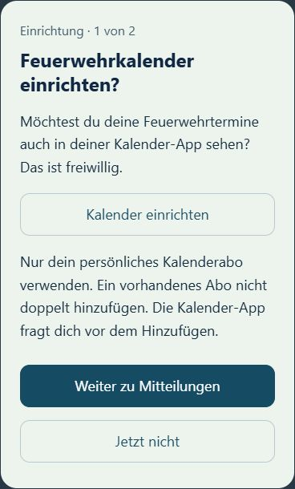
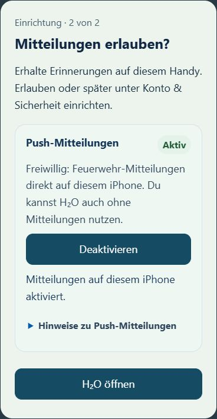
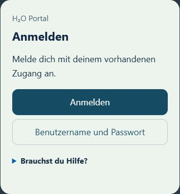
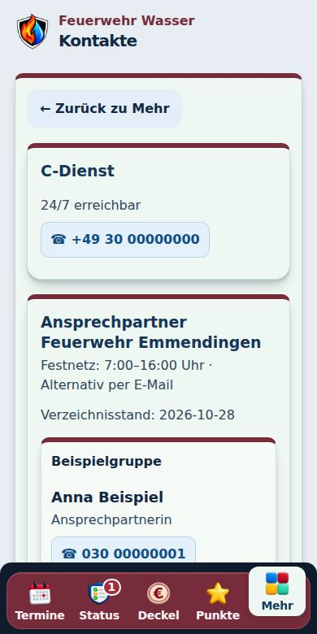
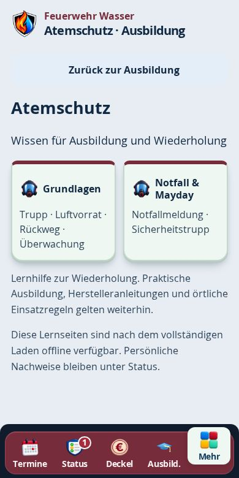
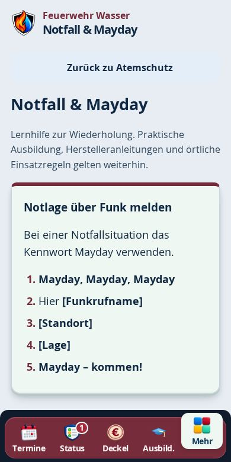

Anmeldung und Geräte · Persönlich anmelden
Dein persönliches Portal für iPhone und Android. Mit Passkey oder Passwort anmelden. Neu hier? Die Verwaltung gibt dir einen Einrichtungs-QR-Code. H₂O funktioniert direkt im Browser.
Vor „Andere Geräte abmelden“ oder Passkey-Änderungen hier dein aktuelles Passwort eingeben.
Passkeys
Konto
Einmal online öffnen, dann offline nachschlagen.
Meine Nachweise
Mein Deckel
Offen
Alles bezahlt. Danke!
Konto & ZahlungKontostand und Hinweise
Dein Konto
So bezahlst du
Bargeld in die Getränkekasse legen und über „Barzahlung“ eintragen.
PayPal: Namen angeben. Die Verwaltung prüft die Zahlung und schreibt sie danach gut.
Deine nächste Runde
Getränke eintragen
Handyeingaben sind noch nicht freigeschaltet. Du kannst deinen Kontostand ansehen und mit PayPal bezahlen.
Antippen, prüfen, gemeinsam speichern.
Mit Treuepunkten bestellen
Die benötigten Punkte werden vor dem Speichern geprüft.
Wann ist meine Buchung gespeichert?
Nach Bestätigung wird dein Konto aktualisiert.
Meine Treuepunkte
Deine Treuepunkte
Hier wird Treue flüssig.
Zusatzpunkte mit der Monats-Challenge sammeln.
Punkte einlösen
Monats-Challenge
7 Fragen · 30 Minuten
🚒 Feuerwehr-Wissen
Meine Monats-Challenge
Dein Wissen, sieben Fragen, ein Monatsbonus.
Theater
Mehr
Alle Kacheln liegen in der Hauptnavigation. Verschiebe eine Kachel hierher, wenn du sie unter „Mehr“ ablegen möchtest.
Atemschutz
Nachweisübersicht für Gruppenführer. Sie ersetzt keine persönliche Einsatzfreigabe.
Beim Öffnen werden die Nachweise geprüft.
Ausbildung
Wissen und Übungsunterlagen für den Feuerwehrdienst
Atemschutz
Wissen für Ausbildung und Wiederholung
Lernhilfe zur Wiederholung. Praktische Ausbildung, Herstelleranleitungen und örtliche Einsatzregeln gelten weiterhin.
Diese Lernseiten sind nach dem vollständigen Laden offline verfügbar. Persönliche Nachweise bleiben unter Status.
Grundlagen
Lernhilfe zur Wiederholung. Praktische Ausbildung, Herstelleranleitungen und örtliche Einsatzregeln gelten weiterhin.
Vor dem Vorgehen
Einsatzkurzprüfung durchführen. Sitz von Gerät, Leitungen und Begurtung gegenseitig kontrollieren. Geräte außerhalb des Gefahrenbereichs an- und ablegen.
Als Trupp zusammenbleiben
Gemeinsam vorgehen, einander unterstützen und gemeinsam zurückgehen. Der Truppführer kontrolliert die Einsatzbereitschaft und die Behälterdrücke.
Luft und Rückweg
Den Rückweg früh einplanen: in der Regel mit dem doppelten Luftbedarf des Hinwegs. Maßgeblich ist das Truppmitglied mit dem höchsten Verbrauch.
Ohne mitgeführte Schlauchleitung den Rückweg anderweitig sichern, etwa mit einem Leinensystem. Funk und Wärmebildkamera ersetzen diese Sicherung nicht.
Atemschutzüberwachung
Bei Einsätzen und Übungen mit Isoliergeräten grundsätzlich überwachen. Der Trupp meldet das Anschließen, das Erreichen des Einsatzziels und den Rückzug. Die Überwachung unterstützt die Druckkontrolle.
Offizielle Quellen
Quellen geprüft am 29.10.2026. Original-PDFs benötigen Internet.
Notfall & Mayday
Lernhilfe zur Wiederholung. Praktische Ausbildung, Herstelleranleitungen und örtliche Einsatzregeln gelten weiterhin.
Notlage über Funk melden
Bei einer Notfallsituation das Kennwort Mayday verwenden.
- Mayday, Mayday, Mayday
- Hier [Funkrufname]
- [Standort]
- [Lage]
- Mayday – kommen!
Standort und Lage üben
Beispiel für die Ausbildung:
- Standort
- Keller, hinter der ersten Tür rechts.
- Lage
- Truppmitglied verletzt, Rückweg blockiert.
Funkübungen nur abgestimmt durchführen. Die App setzt keinen Funknotruf ab.
Notsignalgeber
Er unterstützt das Auffinden verunfallter Kräfte. Die Bedienung erfolgt nach Herstelleranleitung.
Sicherheitstrupp bereitstellen
Gruppen- bzw. Staffelführung stellt den Sicherheitstrupp; Zugführung bzw. Einsatzleitung kontrolliert und legt die erforderliche Anzahl fest. Sobald ausreichend Kräfte verfügbar sind, ist für jeden Angriffsweg mindestens ein Sicherheitstrupp vorzusehen.
Bei einem Atemschutznotfall können mehrere Trupps zur Rettung nötig sein. Ein erforderlicher Sicherheitstrupp wird nicht für gewöhnliche Aufgaben aufgelöst.
Taktische Entscheidungen und mögliche Ausnahmen gehören in die Lagebeurteilung der Führung. Die vollständigen LFS-Hinweise erläutern die Voraussetzungen.
Offizielle Quellen
Quellen geprüft am 29.10.2026. Original-PDFs benötigen Internet.
Wettkampf
Feuerwehr-Leistungsabzeichen Baden-Württemberg
Originalunterlagen der Landesfeuerwehrschule Baden-Württemberg. Dokumentenlinks öffnen die offizielle PDF in einem neuen Tab und benötigen Internet.
Bronze
Landesfeuerwehrschule Baden-Württemberg
Neufassung 2026
Die Richtlinie gilt gemeinsam für Bronze, Silber und Gold. Der Link öffnet den Abschnitt für Bronze ab Seite 15.
- Richtlinie 2026 · Bronze ↗
- Anlage 1 · Modulprüfung ↗
- Anlage 2 · Übungsbahn ↗
- Anlage 3 · Wertungsbogen ↗
Hilfsunterlagen für die Modulprüfung
Bisherige Richtlinie · auslaufend
Abnahmen nach der bisherigen Richtlinie sind für Bronze übergangsweise bis 31.12.2026 möglich. Die für eure Abnahme geltende Fassung legt der Stadt- oder Landkreis fest.
PDFs öffnen online in einem neuen Tab. Quellen geprüft am 29.10.2026.
Silber
Landesfeuerwehrschule Baden-Württemberg
Neufassung 2026
Die Richtlinie gilt gemeinsam für Bronze, Silber und Gold. Der Link öffnet den Abschnitt für Silber ab Seite 19.
- Richtlinie 2026 · Silber ↗
- Anlage 1 · Modulprüfung ↗
- Anlage 2 · Übungsbahn ↗
- Anlage 3 · Wertungsbogen ↗
Hilfsunterlagen für die Modulprüfung
Bisherige Richtlinie · auslaufend
Abnahmen nach der bisherigen Richtlinie sind für Silber übergangsweise bis 31.12.2027 möglich. Die für eure Abnahme geltende Fassung legt der Stadt- oder Landkreis fest.
PDFs öffnen online in einem neuen Tab. Quellen geprüft am 29.10.2026.
Gold
Landesfeuerwehrschule Baden-Württemberg
Neufassung 2026
Die Richtlinie gilt gemeinsam für Bronze, Silber und Gold. Der Link öffnet den Abschnitt für Gold ab Seite 25.
Hilfsunterlagen für die Modulprüfung
Bisherige Richtlinie · auslaufend
Abnahmen nach der bisherigen Richtlinie sind für Gold übergangsweise bis 31.12.2028 möglich. Die für eure Abnahme geltende Fassung legt der Stadt- oder Landkreis fest.
PDFs öffnen online in einem neuen Tab. Quellen geprüft am 29.10.2026.
Funk
Bedienung, Status und Sprechfunk für Wasser
Funkgerät
Motorola MXP600
Im Einsatz & bei der Probe
- 1. Starten
Ein-/Aus-Taste halten. Akku und Lautstärke prüfen. - 2. Gruppe wählen
TMO/DMO und Rufgruppe nach Auftrag einstellen. Auswahl bestätigen. - 3. Sprechen
PTT halten, Freigabeton abwarten, kurz und klar sprechen. - 4. Hören
PTT loslassen. - 5. Tastensperre
Menü, danach * drücken. - 6. Nach dem Dienst
Ausschalten und laden.
Notruftaste nur im Notfall. Bilder schematisch; örtliche Einweisung beachten.
Display verstehen
Handfunkgerät · HRT
MOTOROLA
Unten steht die gewählte Rufgruppe.
Fahrzeugfunk · Bedienhörer
MOTOROLA
Unten steht die gewählte Rufgruppe.
Beispielanzeigen aus euren Unterlagen. Betriebsart und Rufgruppe immer nach Auftrag prüfen.
Zum Nachschlagen
MXP600 · Kurzanleitung (Deutsch, PDF) ↗FMS-Status
Status · BW
- 1Einsatzbereit über Funk
- 2Einsatzbereit im Gerätehaus
- 3Einsatz übernommen
- 4Am Einsatzort
- 5Sprechwunsch · Antwort abwarten
- 6Nicht einsatzbereit
- 0Dringender Sprechwunsch · kein Notruf
3 → 4 → 1 → 2
Tatsächlichen Fahrzeugzustand melden. Für Sprechwünsche die zugewiesene TMO-Betriebsgruppe wählen.
Weitere Status · 7–9
- 7Einsatzgebunden
- 8Bedingt verfügbar / Abfragewunsch
- 9Quittung / Fremdanmeldung
Verwendung nach örtlicher Einweisung.
Quellen · Baden-Württemberg
Funkbeispiele
Übungsbeispiele · nur nach Absprache. Örtliche Einweisung gilt.
 Florian EM 5/42LF10
Florian EM 5/42LF10
- LF10
„Leitstelle Emmendingen von Florian Emmendingen 5/42, kommen.“
- Leitstelle
„Hier Leitstelle Emmendingen, kommen.“
- LF10
„Übungsauftrag übernommen, auf Anfahrt zum Übungsort. Kommen.“
- Leitstelle
„Anfahrt verstanden. Kommen.“
- LF10
„Verstanden, Ende.“
 Florian EM 5/47TSF
Florian EM 5/47TSF
- TSF
„Leitstelle Emmendingen von Florian Emmendingen 5/47, kommen.“
- Leitstelle
„Hier Leitstelle Emmendingen, kommen.“
- TSF
„Am Übungsort eingetroffen. Wasserversorgung übernommen. Kommen.“
- Leitstelle
„Eintreffen und Auftrag verstanden. Kommen.“
- TSF
„Verstanden, Ende.“
 Florian EM 5/100Gerätehaus Wasser
Florian EM 5/100Gerätehaus Wasser
- Gerätehaus Wasser
„Leitstelle Emmendingen von Florian Emmendingen 5/100, kommen.“
- Leitstelle
„Hier Leitstelle Emmendingen, kommen.“
- Gerätehaus Wasser
„Gerätehaus Wasser ist besetzt und erreichbar. Kommen.“
- Leitstelle
„Gerätehaus besetzt, verstanden. Kommen.“
- Gerätehaus Wasser
„Verstanden, Ende.“
Sprechwunsch anmelden, Sprechaufforderung abwarten. Statusmeldungen zusätzlich nach örtlicher Vorgabe. Das Gerätehaus sendet keine Fahrzeugstatus für LF10 oder TSF.
Dienstvorschriften
FwDV zum Nachschlagen
Freiwillige Feuerwehr · Abt. Wasser
Jahresprobenplan
Hellgelb: Ferien · Apricot: Sonntag · Rosa: Geburtstag · Terminfarben nach Art · Feiertage mit Namen
Landkreis Emmendingen
Wasserentnahme aus Gewässern
Pegel Gutach / Elz
Bei einem Abfluss von 1,58 m³/s oder weniger gilt das Entnahmeverbot.
Entscheidend ist der „Abfluss“ im „Tagesmittel am Vortag“. Der aktuelle Messwert und der Wasserstand sind hierfür nicht maßgeblich.
Abfluss und Tagesmittelwert auf NIZ öffnen ↗Öffnet separat. Zum Zurückkehren den neuen Tab schließen oder zurück zum H₂O Portal wechseln.
Für das Verbot zählt weiterhin der NIZ-Tagesmittelwert des Vortags ↗.
Das Verbot betrifft die erlaubnisfreie Wasserentnahme aus öffentlichen oberirdischen Gewässern im Landkreis Emmendingen. Der Rhein ist ausgenommen. Für erlaubnispflichtige Entnahmen gelten gesonderte Regelungen.
Hinweis: Diese Ansicht zeigt den Grenzwert, aber keinen Live-Messwert. Bitte den Tagesmittelwert direkt beim Niedrigwasser-Informationszentrum Baden-Württemberg prüfen.
Quelle: Landratsamt Emmendingen ↗ · Erläuterung zum Tagesmittel ↗
Bundesliga & Pokal
Automatisch bei geöffneter Ansicht
Spiele heute
Bundesliga-Spieltag
| Pl. | Verein | Sp. | Diff. | Pkt. |
|---|
Beim Öffnen wird die Tabelle geladen.
Quelle: OpenLigaDB · Community-Daten, Ergebnisse können verzögert sein. Keine Live-Spieluhr. Pokalspiele erscheinen beim Lieblingsverein, soweit gemeldet.
Konto & Sicherheit
Push-Mitteilungen
Wird geprüftErinnerungen direkt auf dieses Handy.
Hinweise zu Push-Mitteilungen
Auf dem iPhone H₂O über das Home-Bildschirm-Symbol öffnen und Mitteilungen erlauben. Ton und Anzeige stellst du am Handy ein. Bei fünf gespeicherten Geräten bietet die Karte „Push-Verbindungen zurücksetzen“ an: Das betrifft nur Push für dein Konto; auf anderen Geräten danach erneut aktivieren.
Hydrantenplan Wasser
„Plan groß öffnen“ zeigt die PDF zusätzlich in einem eigenen Tab. Zum Zurückkehren den Tab schließen.
Mit zwei Fingern auseinanderziehen zum Vergrößern. Mit einem Finger den Plan verschieben.
Kontakte
Ansprechpartner Feuerwehr Emmendingen
Festnetz: 7:00–16:00 Uhr · Alternativ per E-Mail
Kontakte werden beim Öffnen geladen.
Internes Verzeichnis · Quelle: OneDrive
Datenschutz & Hilfe
Datenschutz auf einen Blick
Welche Daten?
Je nach freigegebener Funktion und Nutzung werden folgende Angaben verwendet:
- Person und Berechtigungen
- Vorname, Nachname, interne Mitgliedskennung, zugeordnete Kalendergruppen und freigegebene Funktionen. Gruppenführer sehen die Rückmeldungen und bei Zusagen die Funktionen GF, ATF oder Maschinist.
- Termine und Teilnahme
- Termintitel, Beschreibung, Datum, Beginn, Ende, Ort, Terminart, Kleidung, Kalendergruppe, eigene Zusage oder Absage und Zeitpunkt der Rückmeldung.
- Nachweise
- Gültigkeitsdatum von G26.2, G26.3, AGT-Unterweisung und FFI, Atemschutzfreigabe sowie Datum der letzten Führerscheinkontrolle, Kontrollintervall und zugeordnete Fahrzeuge. Bei Eigenangaben auch Änderungszeitpunkt und Prüfstatus. Keine Diagnosen, Befunde oder Atteste hinterlegen.
- Getränke und Zahlungen
- Getränkeart (z. B. Bier oder Wein), Anzahl, Einzelpreis, Buchungsbetrag und Buchungszeitpunkt, Zahlungsbetrag, Zahlungsart (bar oder PayPal), bestätigte Zahlung, Rücknahme oder Storno, offener Betrag, Guthaben, Treuepunktestand und eingelöste Punkte.
- Geburtstage, Spiele und Bestellungen
- Soweit genutzt: zugeordneter Geburtstagstermin und Bonusjahr; Challenge-Stufe, ausgewählte Antworten, Ergebnis, Punkte und beteiligte Spieler; Fußballtipps und Punkte; Theaterartikel, bestellte Mengen, Preise, Bestellzeitpunkt, Bestellstatus und Stornos.
- Anmeldung, Gerät und Kontakte
- Zugeordnete Zugangskennung, einmalige Einrichtungsfreigabe, Benutzername und Passwort zur Anmeldung (serverseitig als Prüfwerte), öffentliche Passkey-Schlüssel und Kennungen, Sitzungskennung und Ablaufzeit, Push-Adresse und Push-Schlüssel, Benachrichtigungsauswahl, persönlicher Kalenderabo-Link und letzter erfolgreicher Abo-Abruf. Für die Installationshilfe werden Betriebssystem und Browser auf dem Gerät erkannt. Lokale Menüanordnung und angezeigte Ansprechpartner mit Name, Funktion, Telefon, Mobilnummer und E-Mail-Adresse werden ebenfalls verwendet.
Wer hat Zugriff?
Dein persönlicher Zugang öffnet die für dich freigegebenen Funktionen. Berechtigte Verwaltungs- und Führungskräfte sehen die Angaben, die sie für ihre Aufgabe benötigen.
Wo liegen die Daten?
Die native iPhone-App speichert für das Widget nur den nächsten persönlich freigegebenen Termin mit Zeit, Ort, Kleidung und Rückmeldestatus, höchstens zwölf Stunden. Keine Zugangstoken oder Namen werden an das Widget übergeben. Nach Abmeldung oder erkanntem Zugriffsverlust wird es geleert. Apple erhält für native Mitteilungen eine Gerätekennung; auf dem Sperrbildschirm steht nur ein allgemeiner Hinweis. OneDrive enthält die gemeinsamen Dateien und Berichte. Cloudflare betreibt den geschützten Portaldienst. Die Anmeldung und persönliche Einstellungen bleiben auch auf deinem Gerät gespeichert.
Weitere Dienste
Google liefert die Kalendertermine. Push nutzt die Mitteilungsdienste des Geräts. PayPal öffnet sich beim Bezahlen; OpenLigaDB erst beim Fußball. Keine medizinischen Angaben in Kalendertexte schreiben.
Zugang schützen
Passkey oder Passwort nicht weitergeben. Unter Konto & Sicherheit die eigenen Geräte verwalten. Einen verlorenen Zugang bei der Feuerwehrverwaltung melden.
Korrigieren oder löschen
Bei falschen Daten oder einem Löschwunsch die Feuerwehrverwaltung ansprechen. Sie klärt auch die nötige Aufbewahrung. Abmelden oder die App entfernen löscht keine bestätigten Feuerwehrdaten.
Hilfe im Alltag
Thema antippen. Die Bilder zeigen Beispieldaten.
Installierte iPhone-App einrichten

- Anmelden
Passkey oder Passwort verwenden. Kein Home-Symbol nötig.
- Kalender
Nach der Anmeldung „Kalender einrichten“ wählen und das persönliche Abo in Apple Kalender bestätigen. Ein vorhandenes Abo nicht doppelt hinzufügen.
- Mitteilungen
Danach „Mitteilungen erlauben“ wählen und die iPhone-Abfrage beantworten. „Aktiv“ bestätigt die Dienstverbindung; „Noch nicht eingerichtet“ erfordert die Verwaltung. „Jetzt nicht“ überspringt; Konto & Sicherheit öffnet die Auswahl später.

Anmelden und Zugang schützen

- Im Browser einrichten
Persönlichen Einladungslink öffnen oder QR der Verwaltung scannen. Freigaben gelten 10 Minuten. Zugang einrichten, dann bei Bedarf ein Home-Symbol hinzufügen: In Safari unten Seitenmenü (waagerechte Striche / „…“) → Teilen → nach unten zu „Zu Home-Bildschirm hinzufügen“ → Hinzufügen. Danach das neue Symbol öffnen. „Später“ bleibt im Browser. Danach folgen freiwillig Kalenderabo und Mitteilungen.
- Wieder anmelden
Vom Home-Symbol aus denselben Passkey oder dasselbe Passwort verwenden. Keine neue Freigabe anfordern und nicht erneut einrichten.
- Zugang verwalten
Konto & Sicherheit verwaltet Zugang, Geräte, Mitteilungen und Kalenderabo. Bei verlorenem Zugang die Verwaltung kontaktieren.

Termine und Kalender

- Antworten
Antwort antippen, Bestätigung abwarten. Haken = ausgewählt; erneut tippen = zurücknehmen. Kleidung bei Enge: Einsatzkl. / Tagesd. GF können erinnern.
- Kalender abonnieren
Nach Sperrung, Wiederherstellung oder Link-Reset zuerst das alte H₂O-Abo in der Kalender-App entfernen: Kalender → ⓘ beim alten H₂O-Kalender → Abo beenden / Kalender löschen. Danach unter Konto & Sicherheit das aktuelle persönliche H₂O-Kalenderabo einrichten. Es enthält die für dich freigegebenen Termine. Über den H₂O-Link im Termin antworten.
Nachweise prüfen

- Status ansehen
Unter Status stehen deine Nachweise und Fristen. Hinweise auf fehlende oder abgelaufene Angaben beachten.
- Änderungen melden
Erlaubte Eigenangaben eintragen und speichern. Wo eine Prüfung nötig ist, bestätigt die Verwaltung die Änderung. Keine ärztlichen Befunde oder Atteste eintragen.
Deckel und Theater

- Getränke und Zahlungen
Unter Deckel Getränke vormerken und anschließend speichern. Barzahlung melden oder den angebotenen PayPal-Link öffnen. Erst die Bestätigung gilt als gespeichert.
- Theater bestellen
Unter Mehr → Theater die Mengen wählen und die Bestellung senden. Bei unklarem Status „Übertragung erneut prüfen“ verwenden, statt erneut zu bestellen.
Mehr, Kontakte und Hilfe

- Kontakte öffnen
Mehr → Kontakte: C-Dienst und Ansprechpartner. Telefonnummer zum Anrufen antippen.
- Hilfe finden
Mehr → Datenschutz & Hilfe: Themen zum Aufklappen.
- Funk lernen
Ausbildung → Funk: bebilderte MXP600-Bedienung, FMS und Beispiele. Nach dem Laden offline.
- Menü anpassen
Mehr → Anordnen: Kacheln verschieben. Jahresplan bleibt unter Mehr. Ausbildung → Wettkampf: Bronze, Silber, Gold mit BW-PDFs (online).

Atemschutz lernen

- Lernkarten öffnen
Ausbildung → Atemschutz: Grundlagen und Notfall & Mayday. Nach vollständigem Laden auch offline. Original-PDFs benötigen Internet. Persönliche Nachweise stehen unter Status.

Aktualisieren und Fehler beheben

- Herunterziehen
Am oberen Seitenrand mit einem Finger deutlich nach unten ziehen (mindestens 140 Bildschirmpixel). Kürzeres Ziehen aktualisiert nicht. Bei „Loslassen zum Aktualisieren“ loslassen. Das funktioniert auch direkt auf einer Kachel oder Karte. Es lädt die Portaldaten und übernimmt eine bereitstehende App-Version, sofern keine Eingaben offen sind. Neue Versionen werden bereits beim Start automatisch geladen. Bis zum Abschluss und danach für zehn Sekunden ist keine weitere Aktualisierung möglich.
- Verbindung prüfen
Bei einem Fehler den Datenstand beachten und erneut versuchen. Ungespeicherte Eingaben vor einem Versionswechsel speichern oder abbrechen.
- Speicherung unklar?
Die angebotene erneute Prüfung verwenden. Keine Getränke, Zahlungen oder Bestellungen doppelt eingeben.
Auf dem Home-Bildschirm speichern
Mit dem H₂O-Symbol hast du Termine und deinen Deckel immer griffbereit.

Danach das neue H₂O-Symbol auf dem Home-Bildschirm öffnen und mit deinem vorhandenen Zugang anmelden.